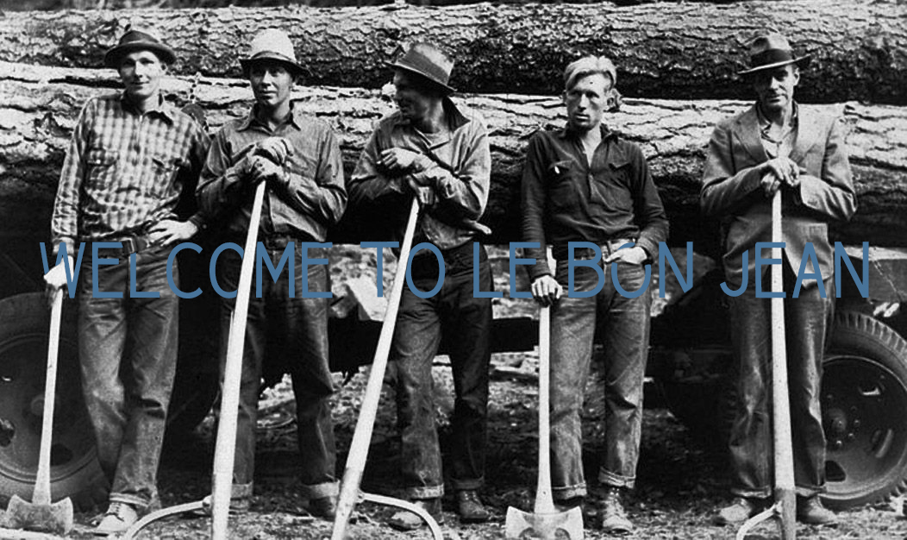

le bon jean, French meaning "the good denim." The story of workwear and American militaria has an impressive cast of characters, but denim has always stolen the show. The story of workwear is, at its core, the story of denim. It is a story written in indigo ink on a surface of woven cotton, which continues to captivate many. Wool, leather, canvas, and duck cloth all play important roles, but it's denim that looms large in the history of workwear. More than any other fabric, it bears the imprint of both workers and servicemen and the work they do. It has a story of its own, but also tells a story about us.
